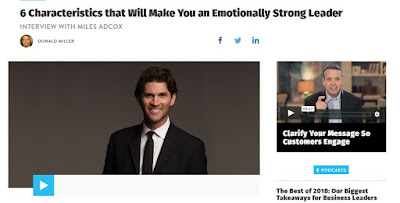

What if being vulnerable and authentic was the key to breakthrough leadership?
Musings
This is going to be a short post. Tonight I listened to the BuildingAStoryBrand Podcast, Episode 20:
Click Here > 6 Characteristics that Will Make You an Emotionally Strong Leader
INTERVIEW WITH MILES ADCOX, hosted by DONALD MILLER
|
 |
| Image from: http://buildingastorybrand.com/episode-20/ |
{kind=link}
Synopsis:
In a book I read earlier this summer, The Emotionally Healthy Leader: How Transforming Your Inner Life Will Deeply Transform Your Church, Team, and the World (affiliate link), Author and Pastor Peter Scazzero discusses his journey to becoming Emotionally Healthy. He shows us the hard truth that if you build a successful business or ministry but fail to develop an emotionally healthy spirituality and leadership, you are still a failure.
How many times do we have to hear about a high powered business leader or church leader falling out of grace, losing their family or health, before we will accept that emotional health is the number one success indicator we should be striving for?
In this podcast episode, Miles and Donald discuss the system Miles uses in his own business to build an emotionally healthy culture and an environment where mistakes are high fived.
He describes the ANCHOR method for developing emotional fitness.
What impressed me was a thing he did with other leaders that few dare to do. They created a closed system in which everyone felt comfortable sharing their darkest struggles (think A.A. for CEOs) and got vulnerable with each other.
This reminds me of the men’s bible study I attended back in Fort Worth (Hey Rudy/Eric!). We had half on purpose half on accident created an environment where men felt accepted and able to be vulnerable. This created a catalyst for change.
As I experienced with my group, Miles experienced with his, and any group of people committed to NO HIDING (such as Al-Anon or A.A. groups) experience, a culture of being open and vulnerable creates the environment where you can bring things to the light so they get handled right.
In that NO HIDING environment, you are changed from the inside out. Not through effort but through letting the darkness out and the light in. It happens while you’re not paying attention, in the unexpected moments, in the consistently showing up.
It was refreshing to hear another group of men having this same experience in a different context but similar environment.
I suggest you listen to this powerful episode.
He describes the ANCHOR method for developing emotional fitness.
ANCHOR:
- Authenticity
- Nurturing
- Courageous
- Humility
- Open
- Resilient
My takeaways…
This reminds me of the men’s bible study I attended back in Fort Worth (Hey Rudy/Eric!). We had half on purpose half on accident created an environment where men felt accepted and able to be vulnerable. This created a catalyst for change.
As I experienced with my group, Miles experienced with his, and any group of people committed to NO HIDING (such as Al-Anon or A.A. groups) experience, a culture of being open and vulnerable creates the environment where you can bring things to the light so they get handled right.
In that NO HIDING environment, you are changed from the inside out. Not through effort but through letting the darkness out and the light in. It happens while you’re not paying attention, in the unexpected moments, in the consistently showing up.
It was refreshing to hear another group of men having this same experience in a different context but similar environment.
I suggest you listen to this powerful episode.
***
Side Note: Check out this amazing organization dedicated to help fight human trafficking.
The owner was interviewed at the end of Episode 20 of the Building a Story Brand podcast.
***
Your Turn:
Can you recall an instance where being vulnerable with another human or group of humans lead to a powerful change in you? Was it the change you expected?